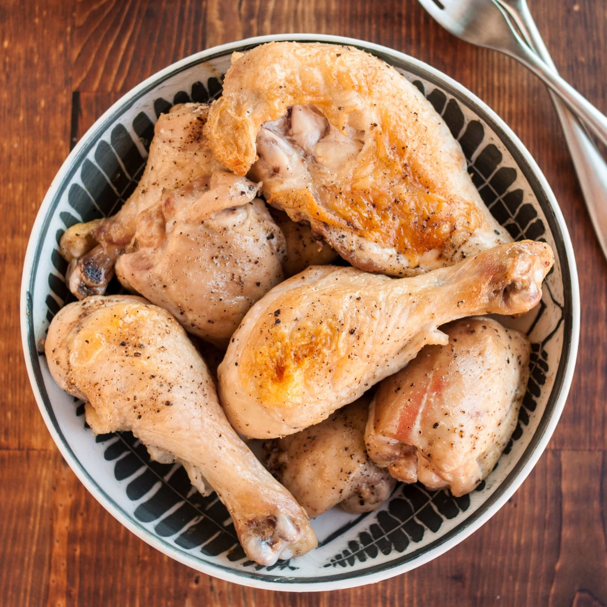

Chicken
Home

How to make boiled chicken
Ingredients
- 2–3 chicken breasts or thighs
- 1 teaspoon salt
- ½ teaspoon black pepper
- Water (enough to cover the chicken)
Steps
- Prep the chicken: Rinse 2–3 chicken breasts or thighs, pat dry, and season with salt, pepper, and your favorite herbs (like thyme or rosemary).
- Boil the water: Fill a pot with enough water to cover the chicken, add 1 chopped onion, 2 garlic cloves, and a bay leaf, then bring to a boil.
- Cook the chicken: Add chicken to boiling water, reduce to a simmer, and cook for 15–20 minutes until fully cooked.
- Check doneness: Ensure internal temperature reaches 75°C (165°F) or cut into the thickest part—juices should run clear.
- Serve: Remove chicken, let rest for a few minutes, slice or shred, and use in salads, sandwiches, or soups.